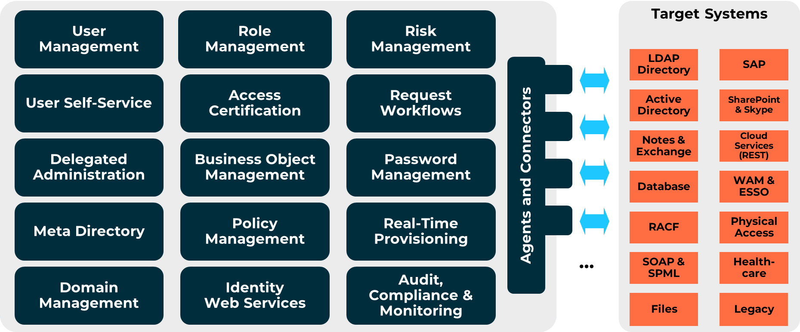
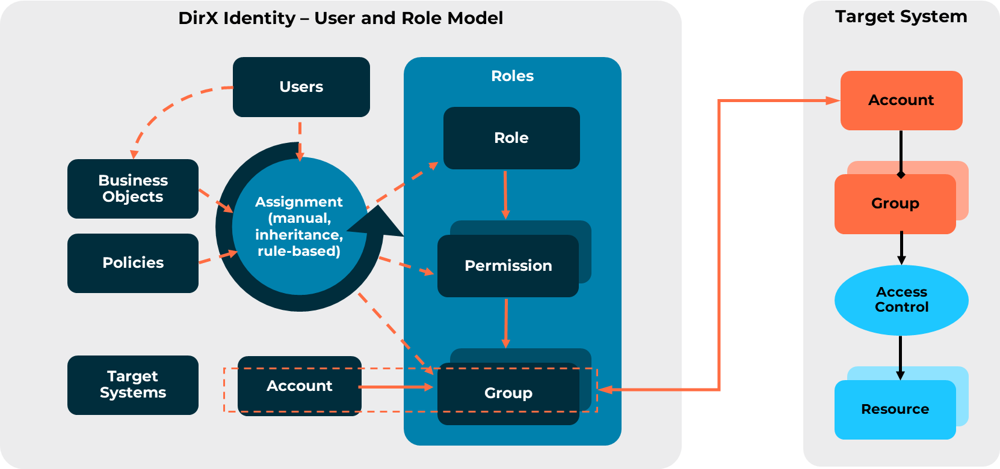
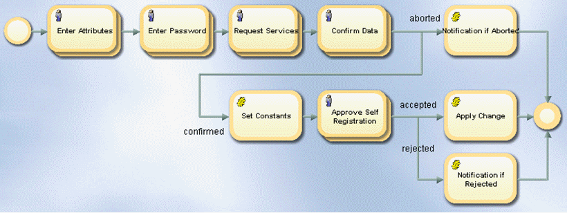
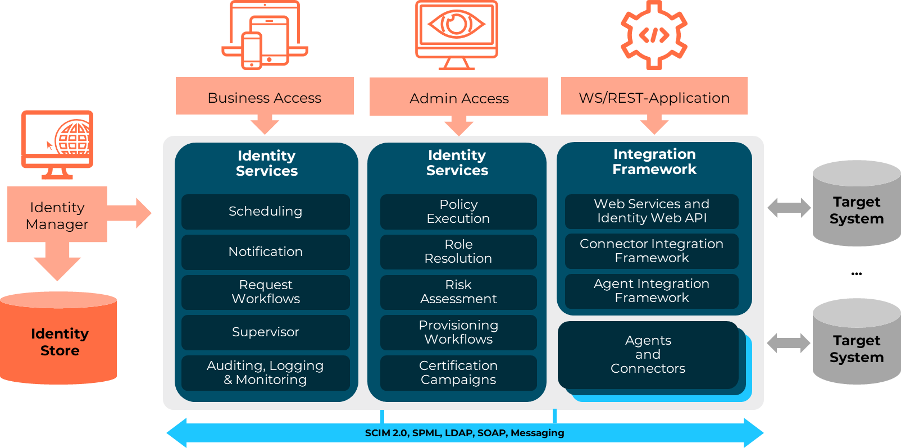

Overview_501350431
[title-text] DirX Identity Knowledge Base : Overview #
Created by Gary Weissenbacher, last modified on Jul 02, 2024
[RH_PD_TOC_BK .confluence-anchor-link]#DirX Identity Overview
DirX Identity provides the functionality and the corresponding building blocks for a complete identity management solution. Its key features include:
-
User management for an integrated user creation and change management process containing both manual and automatic steps
-
User facets, personas and functional users for extended representation of a user or for modeling a resource
-
Access management modeled on role, permission, and group representations of access rights including automatic assignment to users through security policies and their associated rules
-
Certification of user-privilege and privilege-user assignments for risk management and compliance
-
Configurable, extensible request workflows for controlling user self-service and delegated administration activities
-
Web-based user self-service and delegated administration for structuring and load-partitioning identity management tasks
-
Business object management for maintaining common data in structural hierarchies; for example, organizational data or location data
-
Instantaneous, automated provisioning and de-provisioning of users and their access rights to resources in the target systems
-
A complete password management solution with self-service password administration and automatic password synchronization
-
Policies and rules for tailoring the entire identity management solution
-
Metadirectory functionality for bidirectional synchronization of identity and access control data between various sources and consolidation of digital identities into the central identity store
-
Multi-tenant domain management capabilities and support for any IT system with its own user management and integrated access control
-
Web services that can be easily integrated into a service-oriented architecture (SOA) environment
-
Auditing of all relevant identity management operations and reporting on the status of all relevant identity management objects for regulatory compliance and investigative purposes
-
Monitoring the state of the identity management system to ensure optimal performance
-
Scheduled change management for applying changes to DirX Identity data at the right time in the future
-
Integration of IT service management systems into DirX Identity’s governance and provisioning processes to preserve business and user investments in the existing systems
The following figure illustrates the main functional blocks of DirX Identity.

The rest of this chapter describes the core mechanisms and features of each function block and how it implements an identity management function. The chapter also provides a brief description of DirX Identity’s architectural components.
User Management
User management includes all the activities related to the creation, consolidation, maintenance and use of user accounts, user attributes, roles, entitlements and other data encompassing the different directories, user databases, and application-specific repositories that make up the fragmented, heterogeneous IT environment relevant for the lifecycle management of users. DirX Identity supports user management with three types of objects:
-
The user. A user object in DirX Identity represents the user with its personal attributes, roles, entitlements and accounts. DirX Identity can manage multiple accounts for each user object, but only one account for each target system.
-
The user facet. A user may hold different positions within an organization that require different roles; for example, a student who works as a tutor and a teaching assistant. A user facet represents the rights that are relevant to a particular job or position – student, tutor, teaching assistant – while the user object represents all access rights and the resulting accounts. User facet objects allow for modeling multiple profiles that share the same accounts as the user; for example, for multiple job profiles within the same organizational unit.
-
The persona. Users may perform different functions in the company; for example, as administrators or as project managers. The accounts and the entitlements for each functional representation of a user may be quite different, more than one account per target system is typically required, and auditing should be able to distinguish between these functions. Persona objects can be used to extend a user object to address these requirements. Persona objects allow for modeling multiple jobs that require separate accounts for the user; for example, for multiple job profiles within different organizational units.
-
The functional user. A functional user object represents a resource that is assigned to a responsible user (called the sponsor); for example, a global or group mailbox, a physical room with a phone or a working student entry. These types of resources are managed by the sponsoring user and require accounts that are independent of the sponsoring user.
User management consists of two main tasks: maintaining an accurate and up-to-date directory of users to be provisioned and assigning users to roles. User directory consistency can be handled by request processes initiated from the users themselves and/or their managers (user self-service and delegated administration) and by data synchronization workflows (for example, with the enterprise HR system) provided by the metadirectory. These processes and workflows can automatically generate global unique identifiers (GUIDs) during user creation, which are essential for maintaining data consistency in large identity databases.
In DirX Identity, user management tasks include:
-
Adding users, changing the attributes of users and deleting users in the identity store with DirX Identity Web Center or DirX Identity Manager
-
Creating and synchronizing users on a regular basis from various sources such as HR, CRM, and ERP systems or from an existing corporate directory master
-
Assigning roles to users to provide them with the necessary access to target system resources.
To reflect an enterprise’s Human Resource management process, DirX Identity allows for the maintenance of a user’s lifetime with:
-
A start date at which the user is to become active; for example, the date at which a new employee starts work
-
An end date at which the user is to be removed; for example, the contract end date for an outside contractor
-
The start and end date of a leave of absence; for example, a maternity leave
To ensure consistency throughout the user update process, DirX Identity provides a mechanism called a “user LDAP lock” to prevent two or more applications, programs, or threads from updating the same user in parallel. The use case document DirX Identity Java Programming provides more information about this mechanism.
User Facet, Persona and Functional User Management
The user object’s lifetime comprises the lifetime of all its associated persona objects. A user facet or a persona object’s lifetime can be shorter than the user’s lifetime. For a user facet, this provides a way to model different positions within an organization, where each position may have a different lifetime. A user facet might be the right model to apply if the user works in different jobs for one organization and can login under the same accounts for these jobs. For a persona, this provides a way to model different contracts for a user who, for example, works in the same company but for several different organizational units.
A user facet or a persona object usually changes its status with the corresponding user object, and is not reassigned to another user. A functional user, however, can survive the user object and must be re-assigned to another sponsor (user) if the user is removed or is no longer responsible for the resource that the functional user represents.
In DirX Identity, user facet management tasks include:
-
Adding user facets, deleting user facets, and changing the attributes of user facets to be managed with DirX Identity, especially the attributes associated with user facet lifetime and deactivation periods (if DirX Identity masters the user facet data).
-
Synchronizing the DirX Identity user facets with a corporate directory master, if the corporate directory supports the concept of different user representations and masters the user facet data. If it does not, only the user objects are synchronized, and the user facets are maintained in DirX Identity.
-
Assigning roles and groups to user facets. Role assignment for user facets follows the same procedures and rules as for users. Roles assigned to a user facet are automatically inherited by the user who owns the user facet.
Persona management tasks include:
-
Adding personas, deleting personas, and changing the attributes of personas to be managed with DirX Identity, especially the attributes associated with persona lifetime and deactivation periods (if DirX Identity masters the persona data).
-
Synchronizing the DirX Identity personas with a corporate directory master, if the corporate directory supports the concept of different user representations and masters the persona data. If it does not, only the user objects are synchronized, and the personas are maintained in DirX Identity.
-
Assigning roles and groups to personas. Role assignment for personas follows the same procedures and rules as for users.
Functional user management tasks include:
-
Adding functional users, deleting functional users, and changing the attributes of functional users to be managed with DirX Identity.
-
Maintaining the sponsor if the related user for the functional user changes.
-
Assigning roles and groups to functional users. Role assignment for functional users follows the same procedures and rules as for users.
Role Management
DirX Identity uses a standards-based role management model that supports parameterization for granting different types of access according to parameterized input, provides approval and re-approval workflows for role authorization and re-authorization, and enforces segregation of duties (SoD) policies for regulatory compliance.
The role model used in DirX Identity is based on American National Standards 359-2004, the information technology industry consensus standard for RBAC (ANSI/INCITS 359). The ANSI RBAC reference model organizes the elements of RBAC into four groups of incrementally increasing functionality: core RBAC, hierarchical RBAC, static separation of duty (SSD) relations and dynamic separation of duty DSD) relations. DirX Identity supports level 3 RBAC, which consists of RBAC with SSD. However, while ANSI RBAC includes system resources in its access control model, DirX Identity leaves the management of the individual resources to the local administration of the target systems. The following figure illustrates the relationship between DirX Identity’s role model and the access control systems of the IT systems.

As shown in the figure:
-
A user represents a person inside or outside of the enterprise for the purposes of role assignment.
-
A target system represents an IT system that authenticates and authorizes users. Examples of target systems are operating systems, messaging systems, directories and databases, ERP applications, Web portals and e-business applications, groupware applications, and mainframe security systems.
-
An account represents a user in a target system. Users can have accounts in many different target systems.
-
A group represents a set of access rights in a specific target system. Groups provide the link between the role/permission access model and the target system’s access control model. A group can be assigned directly to a user or indirectly through permissions and roles that include the group.
-
A permission represents a set of access rights that is target-system-neutral. A permission can be assigned directly to a user or indirectly through roles that include the permission. A permission aggregates a collection of groups from one or more target systems.
-
Roles control users' access rights to IT systems and resources. Roles are assigned to users either by hand (through user self-service or administrative action) or automatically via provisioning policies or business object inheritance. DirX Identity supports general role hierarchies as defined in ANSI RBAC – roles that correspond to job descriptions can in turn contain (aggregate) simpler roles. Consequently, a role aggregates a collection of roles, a collection of permissions, or both.
-
When a user is assigned a role, DirX Identity provisions the target systems to which the role ultimately applies with authentication data – the accounts – and the authorization data – the account-group memberships - required to establish the role. This process is called "role resolution" and is discussed in more detail in the "Provisioning" section.
-
DirX Identity’s role model can manage access control for all IT systems that allow for group-based or attribute-based administration of access rights. DirX Identity can also manage roles that are not associated with a physical IT system. The corresponding groups, called virtual lists, are used to support different business processes, for example, lists for facility access.
DirX Identity’s role model supports parameterized RBAC, where the access rights modeled by a generic role or permission can be customized on assignment to a specific user based on the value of role or permission parameters. A role parameter is a variable whose value is provided at role assignment time. For example, one generic role "Project Member" can be assigned multiple times to the same user for several different projects. Each time the role is assigned to the user, a specific project name is given for the role parameter. Like roles, role parameter values can be organized into a hierarchical tree.
A permission parameter is an attribute in a user entry whose values influences the permission’s resolution into groups. For example, suppose a user in the Sales department of an organization is assigned the permission "Departmental File Server". If the permission is parameterized by the "Department" user attribute, DirX Identity can use the "Sales" value of the user’s "Department" attribute to resolve the permission into specific target systems and groups that are relevant for the Sales Department File Server. The permission "Departmental File Server" is the same for all employees of the organization, but its resolution to a specific target system depends on the employee’s actual department. Role and permission parameters greatly reduce the number of permissions and roles that need to be defined and make role management and assignment based on high-level business roles appealing and manageable in the enterprise.
A user-role assignment can require initial approval and can also require re-approval after a specified period of time (for example, every 6 months) or on a specified date and time (November 3, 2011 at 5PM). Approval and re-approval workflows can be defined for these roles to carry out the approval and/or re-approval process automatically. The approval process supports a variety of models for calculating participants in the approval process, including single individual approver, static and dynamic approver groups, policy-driven and even programmed approver calculation.
In a role-based system, conflicts of interest can occur as the result of a user receiving access rights associated with conflicting roles. The ANSI RBAC SSD component prevents this type of conflict by enforcing constraints on the assignment of users to roles. DirX Identity implements this model of separation of duties - also called segregation of duties (SoD). Enterprise SoD policies defined in DirX Identity specify which user-role assignments constitute conflicts of interest or pose unacceptable security risks. DirX Identity enforces these policies during user-role assignment and will not make a user-role assignment that it determines is in violation unless special approval has been performed.
Certification Campaigns
DirX Identity provides a comprehensive role model for controlling access rights to resources in connected target systems. Features such as access policies, SoD and approval workflows help to secure the assignment of access rights. However, compliance requirements can mandate certification or re-certification of assignments on a regular basis when they are made explicitly by managers or administrators instead of through business objects or rules. DirX Identity provides several mechanisms to support these compliance processes:
-
Manual access certification campaigns for users. This mechanism allows a campaign manager to define the users that require certification and set up start and end dates for the campaign. When the certification start date arrives, the certification campaign controller starts the campaign. For every user to be certified, it discovers the user’s privileges, determines the approver (normally the user’s manager), and informs the approver via email. The approvers are notified by the certification campaign controller and they can view each user and his or her privilege assignments. They must decide whether to accept or reject each privilege assignment. They can even change an assignment’s end date or a role parameter. When the campaign’s end date arrives, DirX Identity removes all rejected assignments and notifies the affected users. Additionally, when a certification task is approaching the due date, reminder notifications are sent to the approvers. The campaign manager can produce a report on the entire campaign.
-
Manual certification campaigns for privileges. This mechanism allows a campaign manager to define the privileges that require certification and then schedule (or run explicitly) the certification campaign controller to start the campaign. The controller discovers the set of privileges that have been selected for certification and their current assignments and then runs a certification campaign entry for each one. The approvers are notified by the certification campaign controller and they can view the privilege and all of the users to which it is assigned. They must decide whether a user keeps the privilege or whether the privilege is to be removed or modified (change end date or remove role parameters). When approver attestation is complete, DirX Identity removes all rejected assignments to the privilege and notifies the affected users. Additionally, when a certification task is approaching the due date, reminder notifications are sent to the approvers.
-
Continuous access certification via re-approval: This method uses DirX Identity’s re-approval feature on a per-assignment basis. In this scenario, the approval for selected or critical roles is repeated at a specified time. The workflow used for the original approval of the role assignment can be used again, or a special re-approval workflow can be created for the re-approval task. If the notified approvers reject the assignment, the role is removed from the user. Re-approval can be set up so that all critical roles are scheduled for re-approval at the same time.
Request Workflow
DirX Identity provides several types of request workflow that support user self-service and delegated administration activities:
-
Request workflows that create new identity management data (creation workflows), like users, roles, permissions, policies, and so on, including global ID generation
-
Request workflows that change and delete existing identity management data (modification workflows), like the attributes of users, roles or business objects. Attribute policies govern which attribute changes must be approved and which workflow for which attribute is to be started.
-
Request workflows that create and maintain relationships between identity management data (assignment workflows); for example, assigning a role to a user or assigning a role to another role (role hierarchies)
Each of these workflows can contain optional approval steps that manage the authorization requirements for the request.
DirX Identity allows requesters and approvers to sign their requests and approvals digitally; the digital signature is stored with the request workflow audit trail in the central audit store, and this audit information, including the signed requests, can optionally be protected by system digital signature for compliance purposes.
DirX Identity provides template request workflows. Customers can make copies of these templates and then use DirX Identity’s graphical workflow editor to tailor them to their requirements. The following figure illustrates the "create user" request workflow template.

The management of request workflows is protected by access policies and comprises start, stop, suspend and resume operations as well as a "change participant" feature to react to real-life situations in which approvers are temporarily unavailable (or permanently unavailable because they have left the company) or are incorrectly assigned to the approval task at hand. Users can approve with DirX Identity’s Business User Interface or with DirX Identity’s Web Center interface.
Self Service and Delegated Administration
DirX Identity makes a number of tasks available for self-service through its Web Center user interface. User-oriented self-service tasks include:
-
Registering yourself with one or more of the corporate services available for self-registration over the intranet or extranet
-
Making changes to your own data, including your own passwords
-
Recovering and re-setting forgotten passwords through a challenge-response procedure
-
Requesting a password reset
-
Requesting roles for yourself
-
Checking the status of your requests and approvals
-
Delegating your access rights (or some of them) to other users
Access policies are used to make sure that a user has access at least to his own data. Access policies are discussed in more detail in the "Policy Management" section.
Delegated administration in DirX Identity is the process of assigning the access rights you have within DirX Identity, or a subset of your access rights, to someone else, optionally for a specified period of time. These access rights include the rights to manage users and roles, assign roles to users or approve requests for such assignments. For example, a project leader who is away for two weeks can delegate the access rights that allow him to assign project-related roles to the members of his team to another person in his group who will then be able to assign roles to these users during these two weeks. And, instead of allowing his substitute to assign all of the available project roles, the project leader can permit his substitute to assign only one or two basic roles; he specifies the roles that can be assigned when he makes the delegation.
Delegated administration tasks in Web Center include:
-
Creating new users, roles and rules
-
Making changes to user, role and rule data
-
Assigning roles to existing users
-
Approving the assignment of roles to users or the creation of users, roles, and rules
-
Deleting existing users, roles and rules
-
Running status reports
Delegated administration tasks in the Business User Interface include:
-
Making changes to users and privileges
-
Requesting privileges for other users (team members)
-
Approving privilege assignments
-
Assigning privileges
-
Delegating rights to other users
Access policies are used to control which of these administrative tasks a given administrator can perform and on what users and/or roles he is allowed to perform them. Access policies are described in more detail in the "Policy Management" section.
Business Object Management
Business objects are collections of business-related data that can be used to automate user-role assignment and reduce the redundancy of user data in the identity store. DirX Identity provides a default set of business objects that can be used to build organizational business structures, project structures, and other kinds of structures. Customers can create their own business objects for complete flexibility.
In DirX Identity, business objects are commonly used to:
-
Automate user-role assignment by allowing the roles referenced by the business object to be inherited by the users linked to it. For example, an "organizational unit" business object can reference a set of roles that control resources within the organizational unit; when a user is linked to the organizational unit business object, he automatically inherits the roles that allow him access to these resources. Any new roles linked to the business object are automatically inherited by those users assigned/linked to the business object.
-
Manage user data centrally and consistently across a set of users; for example, a "location" business object defines all address data only once and can then be linked to related user entries. An update to the business object’s addressing information is then automatically propagated to the linked users.
-
Define the contents of proposal lists. A proposal list is a list of selections displayed in a drop-down list when a user clicks the drop-down list icon for an attribute value field. Proposal lists can be simple; for example, a proposal list can display a list of locations derived from "location" business objects. Proposal lists can also be complex and interlinked; for example, selecting from a "country" list leads to selecting from an "available locations" list, which leads to selecting from an "available buildings" list, which leads to selecting from an "available rooms" list.
Business object management includes all the activities related to the creation, maintenance and use of business objects, business object attributes and relationships to other objects. Business objects include organizations, organizational units, locations, cost locations and projects.
In DirX Identity, business object management tasks include:
-
Adding business objects in a hierarchical structure, changing the attributes of business objects and deleting business objects in the identity store with DirX Identity Manager or Web Center.
-
Assigning/linking users to the appropriate business objects
-
Assigning roles to business objects so that users linked to the business objects can automatically inherit them
-
Creating and synchronizing business objects on a regular basis from various sources such as HR, CRM, and ERP systems or from an existing corporate directory master
-
Defining proposal lists that use the business objects
Real-Time Provisioning
Provisioning is the dynamic process of establishing the target system-specific access rights to which a user-to-role assignment ultimately resolves. Provisioning makes use of all the processes of user, role and policy management discussed in earlier topics. Provisioning is a two-step process:
-
Calculating the accounts, the groups, the target systems to which the accounts and groups belong, and the account-group memberships that result from the role assignments to users and creating the account, group, and group membership data in the identity store – this process is called role resolution and can involve the matching of user attributes to provisioning policies, permission parameters or role parameters where appropriate.
-
Using the connectivity infrastructure to physically transfer the access rights data immediately from the identity store to the target systems and ensure the consistency of the target system data with the access rights derived from the role resolution.
User-to-role assignments that require approval are not provisioned until every approval has been received.
Note that it is the administrator of the target system who assigns access rights to the resources on the system for a given group. This process is outside of DirX Identity and is accomplished using the target system’s administrative tools and enforced by the access control components of the target system. The enterprise needs to have an organizational process in place that controls both the set-up of policies and the role structure and the assignment of access rights to groups in target systems.
When there is a change in the user’s roles, permission parameters, or role parameters, or when there is a change in a user’s attribute that controls a provisioning policy, DirX Identity automatically and immediately performs a new role resolution and re-provisions (or de-provisions) the target systems.
DirX Identity’s provisioning services provide centralized, consistent, single-point and fully automated administration of users and their access rights within the enterprise IT infrastructure. However, integrating a target system completely with these provisioning services does not always make sense - for example, when the system’s user population is small or frequent user or role maintenance is not an issue. These types of systems can be loosely integrated via DirX Identity’s manual provisioning feature, allowing them to remain "offline" to its full set of provisioning processes but still benefit from DirX Identity processes that monitor provisioning events to the offline systems and dispatch them to the responsible administrators for manual implementation.
Password Management
DirX Identity supports a complete password management solution that allows users to maintain a single password that will be automatically synchronized to all relevant IT systems in the enterprise. Password management functions allow users to change and reset their password in one or more systems (for example, in an LDAP directory or in a Windows domain), notify users when they need to change their passwords to comply with password policies established for the enterprise (for example, expiration of a password’s lifetime), and synchronize in real time the password changes to all the relevant IT systems. Users can reset forgotten passwords themselves through a challenge-response procedure or request that an administrator reset them.
Through the Web Center interface, users can:
-
Change their own passwords
-
Recover/reset forgotten passwords through a challenge-response procedure
From the Web Center interface, administrators can:
-
Reset other users' passwords on request
-
Create and maintain password policies that control how passwords are used and administered in the enterprise, such as password length and complexity, password aging, and password re-use after expiration
Through the Business User Interface, users can:
-
Change their own passwords
-
Administrators can also:
-
Reset other users' passwords
With the Atos Password Reset Client (APRC), users can reset their Active Directory password from their Windows login dialog. They authenticate with their certificate, with a challenge-response procedure, or with a one-time password (OTP) that is sent via SMS.
DirX Identity provides an event-driven password synchronization service that ensures that password changes made from the Web Center interface in the identity store, or from the Windows system in the domain controller, are immediately synchronized to the users' accounts in the appropriate target systems. The service can audit password changes and output the audit information into XML format or provide the data directly to DirX Audit.
Policy Management
A policy is a high-level directive that helps to govern, automate and control identity management processes according to business practices, policies and processes. Policies are composed of one or more rules; each rule implements a part of the policy.
DirX Identity supports the creation of identity management policies for governing access to enterprise resources, for ensuring the integrity of DirX Identity user, role and target system data and for acquiring intelligence on DirX Identity data and operations for compliance and continuous process improvement initiatives. These policies include:
-
Access policies to control self-service and delegated administrative access to DirX Identity’s internal resources. An access policy defines a set of access rights to almost any kind of DirX Identity object; for example, users, roles, business objects, user-role assignments, request workflow instances, reports, and even DirX Identity Web Center menus. For example, an access policy can specify that project team leaders can edit the user data of and assign project-specific roles to the members of their project team, or specify that only certain users are allowed to view certain security-sensitive roles or accounts. Access policies allow the enterprise to structure administration tasks according to its business or organizational model and to restrict the operations on DirX Identity data that particular users can perform.
-
Attribute policies to track and control changes to specific object attributes like a user’s organization or location. Changes to these attributes automatically trigger an approval workflow so that the changes will be authorized.
-
Deletion policies to track and optionally control the deletion of complete objects. For example, a deletion policy can specify that users and roles are not to be deleted without approval.
-
Event policies to track creation of and changes to certain types of object; for example, users, accounts, or "organization" business objects. Creating a new object or changing an existing object of the indicated type triggers an event-based workflow that stores information about the creation or change event for compliance purposes.
-
Assignment policies to grant and revoke roles automatically based on the values of user attributes against the conditions of the policy, which in turn controls the access rights received in the target systems. Provisioning rules are used to define this type of policy. For example, a provisioning rule might specify that a certain application can only be used by employees in the Sales department. The value of the user attribute "Department" is evaluated against the rule, and those employees whose "Department" value is "Sales" are granted the role to use the Sales application. When the value of the user attribute - in this case, "Department" - no longer matches the condition of the rule - in this case, "Sales" - the "Sales application" role is automatically revoked and the user is de-provisioned.
-
SoD policies to specify the combinations of roles, permissions and groups that cannot be assigned to a user at the same time unless approval is obtained under mitigating controls.
-
Password policies to control the requirements placed by DirX Identity on user passwords, such as password complexity, expiration dates, the behavior of the system after failed logins, and so on.
-
Reconciliation policies to compare target system data against the information within DirX Identity to detect and reconcile deviations between the target system’s accounts, groups, and account-group memberships and the same information in DirX Identity. Validation rules are used to define this type of policy.
-
Consistency policies to check the consistency of user and role data within DirX Identity and repair any inconsistencies, for example, to keep account and user data consistent. Consistency rules are used to define this type of policy.
-
Audit policies to define the DirX Identity objects and object attributes that are relevant to compliance with corporate security policies and government regulations and which therefore should be monitored for change.
DirX Identity processes policies either dynamically or periodically, depending on the kind of policy.
Metadirectory
DirX Identity metadirectory is the set of services that integrates the disparate directories, user databases, and application-specific information repositories in the enterprise IT network into a centralized data store and provides the connectivity, management and interoperability functions that unify the user data (“join”) and ensure the bidirectional attribute flow (synchronization) in this fragmented environment. The metadirectory provides:
Integration services that collect and integrate user data from multiple authoritative sources - human resources directories, enterprise resource planning (ERP) systems, customer relation management (CRM) and Supply Chain Management (SCM) databases - into a single, unique digital identity that represents the user to be provisioned in the IT systems.
Synchronization services that maintain an accurate and up-to-date identity store of these identities and synchronize identity data from the identity store back into the authoritative sources.
For both integration and synchronization services:
-
DirX Identity agents and connectors enable data exchange between the different target systems and the identity store
-
Execution can be scheduled, triggered by specific events, or initiated by hand by an administrator and can be monitored and logged for auditing purposes.
-
Flexible data flow and ownership models allow the enterprise to control who owns the data, what data is synchronized, and how update operations on the data are carried out, including authoritative control, filtering, and operations mapping.
Domain and Target System Management
Multi-tenant support is provided through the concept of DirX Identity domains. A DirX Identity domain is a high-level separation of DirX Identity data that can be used to establish different policies and role models in a single DirX Identity system. Users and administrators from one domain cannot see and handle objects from another domain, and all roles, rules, policies and workflows are completely separated. You can use domain specific set-up parameters to define different behavior for different domains.
DirX Identity delivers several sample domains – for example, a sample domain for a company that provides software and hardware products and a sample domain for a healthcare organization - that illustrate the typical ways to work with DirX Identity in a customer environment and show most of the features that DirX Identity provides. These domains can be automatically installed on request during DirX Identity installation.
A target system is any system that DirX Identity is to control. Examples of target system types are Active Directory (AD), databases or applications that contain their own user management with integrated access control. You can define any number of target system instances for one type, for example, you can model the domains of an AD forest as different AD target systems. Administrators can set specific set-up parameters according to each target system type and instance.
Target systems typically contain accounts and groups that are kept synchronized between the connected system and the target system. Target systems usually have a small number of privileged accounts that allow users to perform high-risk, security-critical operations on the target systems and can be used by different users in parallel. DirX Identity allows privileged accounts to be modeled as roles so that they can be controlled and audited as identity management elements. Privileged accounts then become eligible for assignment to users and for the application of SoD, re-approval, and other role-related policies. DirX Identity also applies automatic controls to privileged account passwords, such as automatically enforcing a password change when a user assignment is removed from the role and automatically changing expired privileged account passwords.
Web and REST Services
Service-oriented architecture (SOA) is a methodology for structuring functional elements as modular, interoperable services. SOA can be an effective way for an enterprise to bring its internal assets online as re-usable, interoperable business services that can be quickly and easily integrated and re-integrated to respond to changing business processes and new market opportunities. Web Services is one way to implement an SOA, and it has become a popular technology for connecting the business services deployed in enterprise SOA environments
The Identity Web Services can be used to integrate DirX Identity’s provisioning features into SOA-compliant application environments. The Identity Web Services interface can handle users, roles, permissions, groups, accounts, target systems and business objects. The Identity Web Services implement the OASIS Service Provisioning Markup Language (SPML) standard and support the standard SPML operations add, modify, delete, lookup and search. Depending on the object type, additional capabilities may be offered; for example, assignment of roles to users or password changes.
For all object types, a user hook - an extension made by the customer to DirX Identity common code that is protected from product updates - can intercept requests and responses and perform custom operations such as moving entries and creating or checking unique identifiers.
In the area of access management, the Identity Web Services provide Web single sign-on integration with SAP NetWeaver and leading Web access management products such as DirX Access and Entrust GetAccess.
With the Representational State Transfer (REST) paradigm becoming more and more popular, DirX Identity provides a REST service which is used to integrate DirX Identity into application environments that want to use the standard HTTP protocol and the performance and scalability advantages of RESTful services. In particular, they can be used by modern, HTML5-based Single-Page applications; one example is the new DirX Identity Business User Interface.
The REST services adhere to SCIM 2, the System for Cross-domain Identity Management. They provide the following features with JavaScript Object Notation (JSON) as the data format:
-
Approval - users can approve their tasks and accept or refuse them either task-by-task or in bulk mode.
-
Self Service - users can request roles and view and edit their profile.
-
User Service - users can request roles for other users, view and edit the profiles of other users, and reset their passwords.
-
Delegation Service - users can delegate tasks to other users.
-
Domain Service - users can manage any type of objects in a generic way.
Audit and Compliance
DirX Identity provides configurable, customizable, and comprehensive audit trail, status reporting and query mechanisms to help ensure and document regulatory compliance.
The audit trail mechanism can track all relevant identity management events, recording information such as the date/time the event occurred, the identity that initiated it, the users who approved it, and whether it was carried out by hand or automatically by a policy. DirX Identity supplies a set of pre-configured audit policies and permits customers to define their own audit policies to satisfy individual corporate requirements. Audit logs are archived in XML format to a central audit store for centralized visibility and traceability and can be optionally secured with a system-specific digital signature to make them tamper-proof.
The status reporting mechanism can generate regulation-specific and custom status reports in XML, HTML, or pure text format on all DirX Identity objects on demand or at scheduled intervals. Customers can use DirX Identity reporting to create reports on specific objects or object collections and their attributes, user-role, permission, and group assignments, delegated users and administrators, unused privileges, the entire role catalog, the complete role hierarchy, and provisioning workflow hierarchies. DirX Identity provides pre-configured reports for common regulations and allows customers to use Extensible Stylesheet Language Transformations (XSLT) to customize them or create their own reports to meet specific requirements. Access policies can be applied to reports to safeguard their security.
While a status report typically comprises the content of many related DirX Identity objects and shows them as a whole, a query typically runs on a specific type of object - for example, a user or a role - with a specific search filter and returns a set of objects to examine. A query can be used, for example, to return a list of objects in an error state. An administrator can examine each object, fix the error, then run the query again to make sure the object is no longer returned in the list.
DirX Identity auditing, status reporting and query work in concert with other DirX Identity services to permit fast, cost-effective deployment of regulatory compliance controls:
-
Metadirectory services allow identities and their access rights to be centrally managed, providing greater transparency into identity management activities and tighter administrative control with fewer administrators
-
Automated role- and policy-based user provisioning ensures that corporate security policies are consistently enforced across all points in the corporate IT infrastructure, avoiding error-prone, ad hoc application of access rights by many different IT administrators working in different parts of the enterprise
-
Approval and re-approval workflows automate the application of corporate authorization policies, ensuring that they are applied consistently rather than on a case-by-case basis
-
Automated, real-time user de-provisioning ensures that access rights of terminated employees and contractors are immediately and accurately revoked on all affected IT systems
-
Automated reconciliation services can detect suspicious accounts and access rights on corporate IT systems and eliminate them automatically or report them to the appropriate administrator for handling
-
Segregation of duties enforcement by user provisioning services prevents user-role assignments that violate corporate security policies or create unacceptable risks
-
Pre-configured audit policies and reports help to jump-start regulatory compliance efforts
DirX Identity also offers seamless integration with DirX Audit, the DirX Identity product that provides for centralized, secure storage, analysis, correlation and review of identity-related audit logs in a single user interface. DirX Audit gives auditors, security compliance officers, and audit administrators the answers to the "what, when, where, who and why" of user access and entitlements.
Risk Management
DirX Identity provides risk assessment for identities based on an extensible set of risk factors.
When risk assessment is enabled at the domain and a risk policy is defined, a risk calculation workflow regularly calculates the risk factors for every user in the domain and then aggregates them into a compound risk according to a customizable configuration, thus classifying users into risk categories from low to high. DirX Identity Web Center displays a user’s risk category, while DirX Identity Manager displays a user’s individual risk factors as well. Risk factors include SoD violations, imported accounts and group memberships and total number of group memberships or privileged accounts.
For any requested change in a user’s privilege assignments, a customizable assignment request workflow can compare the compound risk before and after privilege assignment. If the risk category increases as the result of the requested privilege assignment, additional approval steps can be required before the privilege can be assigned. Compliance officers, line managers and administrators can use DirX Identity’s risk assessment feature to monitor the risk values in the domain and plan actions to reduce the number of high risk users; for example, by running appropriate certification campaigns or by enforcing additional approval steps.
Monitoring
Running complex provisioning and request workflows can result in a heavy load on DirX Identity’s servers. You can use DirX Identity’s specially tailored user interfaces to check the state of the system and to observe running processes and threads. You can use this information to optimize the system; for example, you can add or remove threads for specific tasks, or you can change relevant parameters that affect system performance.
DirX Identity provides a set of specialized Nagios plugins and commands for the Java-based Nagios Remote Plugin Executor (JNRPE) add-on that can be used in an existing Nagios® Core™ Open Source monitoring environment to monitor the status of DirX Identity service resources and operations and to collect statistics about these items for later analysis.
The DirX Identity Nagios plugins allow for monitoring:
-
All information provided via Java Management Extensions (JMX), especially from the Java-based Identity Server and other JMX-enabled programs such as Apache ActiveMQ and Apache Tomcat.
-
The C++-based Identity Server using internal DirX Identity interfaces.
The DirX Identity Nagios plugins provide input parameters for specifying warning and critical thresholds to be monitored for DirX Identity service operations, offering DirX Identity administrators the opportunity to respond to problems detected by the plugins and displayed by the Nagios server before they become severe, and to track their resolution.
DirX Identity provides commands for the JNRPE add-on to check:
-
Java-based Identity Server state
-
The outstanding responses of a specific Java Messaging Service (JMS) adaptor
-
A statistics attribute of a specified workflow
-
Java Virtual Memory (JVM) usage
-
C++-based Identity Server state
The DirX Identity servers attempt to handle each event properly. Nevertheless, errors in messages and events can occur as the result of incorrectly configured server processes. These messages and events are stored in a dead letter queue which DirX Identity’s monitoring interface allows you to examine. You can then correct the configuration and process the event again. You can also delete saved messages or events that you no longer need to track.
You can also use the LDAP session tracking information generated by DirX Identity components in conjunction with DirX Directory’s audit record decoding tools to pinpoint DirX Identity component operation and correlate activities across LDAP servers and clients.
Scheduled Change Management
By default, DirX Identity processes updates to its identity management data immediately. For example, when an administrator changes a user’s department attribute, the change is applied right away (or when approval is obtained). In some cases, however, administrators may want to delay the application of a change and schedule it for a future date. For example, suppose a company employee is transferring from Sales to Marketing, but not until the end of the month, which is a few weeks away. The employee’s department information should not change until his transfer is complete, but it should be scheduled to change on the date that coincides with his transfer.
DirX Identity provides a ticketing feature that allows administrators to specify due dates for changes to any DirX Identity object - user, role, policy, and so on - and thus schedule the change to occur on the right date. A ticket process runs on a daily basis to check these due date "tickets", and then automatically initiates the change when a ticket’s due date arrives. In this way, the administrator can schedule the employee’s department attribute change from "Sales" to "Marketing" now, and know that it will be carried out automatically at the end of the month. Administrators can view pending and processed ticket orders made on DirX Identity objects to track the order status and results.
DirX Identity Components
The main components of DirX Identity include:
-
Identity Business User Interface
-
Identity Web Center and Identity Web Center for Password Management
-
Identity Manager
-
Identity Store
-
Identity Server
-
Identity Services
-
Agents and connectors
-
Identity Integration Framework
-
Identity Server Admin
-
Identity Web Admin
-
Atos Password Reset Client
The following figure illustrates these components and the relationships between them.

Identity Web Center
The Identity Web Center is the component that enables user self-service and delegated administration from a Web browser. Customers can integrate some or all of the Web Center’s functions into their Web portals, and they can customize the layout of the Web Center’s HTML pages. Web Center also supports various types of single sign-on; for example, for Microsoft Windows, SAP NetWeaver and generic configurable mechanisms.
Identity Business User Interface
The features provided by the DirX Identity Business User Interface focus on the most common use cases of business users. Following the mobile first approach, the user interface is designed for tablets and smartphones as well as for desktop computers. The Business User Interface is based on HTML5. It supports the following use cases:
-
Login with password or PKI card
-
Manage team members (including profile changes, requesting new privileges, and resetting passwords)
-
Display and edit a user’s own profile
-
Request a new privilege
-
For requests, edit the participants list and cancel a user’s own requests
-
Display and edit role parameters of assigned roles
-
Show pending role requests
-
Approve single/bulk role requests
-
Create, edit and modify delegations (new style)
-
Change and reset passwords for team members
Identity Web Center for Password Management
The Identity Web Center for Password Management is a Web application that provides the subset of Identity Web Center functions that support the password management solution described in "Password Management". Identity Web Center for Password Management allows users to change the passwords of some or all of their accounts in the target systems and permits administrators to reset user passwords, manage password policies and run specialized reports on password management-related activities.
Identity Manager
The Identity Manager provides an easy-to-use, Java-based graphical user interface for transparently configuring and managing all aspects of DirX Identity, including:
-
Users and services
-
Roles and policies
-
Integration (Metadirectory), provisioning, and request workflows
-
Target systems and authoritative sources
Identity Manager can also be used to monitor provisioning workflows, role resolution and policy execution. Identity Manager supports the SSL (Secure Socket Layer) protocol for authenticated, encrypted communication with the Identity Store.
Identity Store
The Identity Store is an LDAPv3 directory - a DirX Directory Server - that serves as the consolidation point (the directory "join") for identity integration from authoritative sources and as the distribution point for provisioning of the target systems in the enterprise IT infrastructure.
The Identity Store is the repository for all DirX Identity configuration data, including user data, business objects, roles, policies, request workflow definitions, target system account, group, and account-group membership data and the configuration and operational data required by the metadirectory integration and provisioning services. The Identity Store provides the central point for management of this data and for its synchronization back to the target systems and authoritative sources. To provide for distribution and scalability, parts of the configuration and monitoring data can be distributed to other directory servers.
Identity Server
The Identity Server provides a comprehensive runtime environment for request workflows and for event-triggered and scheduled provisioning workflows. The server provides components for:
-
Handling event-triggered provisioning tasks like password synchronization or the real-time synchronization of provisioning events
-
Scheduling provisioning workflow runs, including recovery, retry, and checkpointing operations in the event that problems occur
-
Notifying administrators via e-mail about provisioning workflow events
-
Messaging services, messaging queue support and Java Messaging Service (JMS) clients
-
Auditing, logging, and collecting statistics to help administrators and auditors to analyze and control DirX Identity’s execution environment
Server components can be distributed across different systems in the enterprise network to provide for load-balancing and scalability and high availability scenarios.
DirX Identity provides two types of Identity Server: a Java-based Identity Server that handles Java application programming interfaces (APIs) and a C-based Identity Server that handles C and C APIs.
Java-based Identity Server
The Java-based Identity Server is designed to handle event-triggered provisioning processes and request workflows. These types of processes are required, for example, by password management: the real-time provisioning of user password changes made through the Identity Web Center or coming from the Windows Password Listener. When a user changes his or her password, the Java-based Identity Server ensures that the new password is synchronized immediately with the user’s accounts in the appropriate target systems.
The Java-based Identity Server also supports the real-time provisioning of changes that are calculated, for example, by role resolution. Changes to a user’s role assignments or parameters may require changes to accounts and account-group memberships in one or more target systems. The DirX Identity system sends these changes as events to Java-based Identity Server workflows, which transfer the information immediately to the target systems. Another example is a change to a business object, for example, an organizational unit. Changes to the organizational unit’s attributes are propagated by events to all users that are assigned to this unit. When a role is assigned to the unit, it is immediately inherited by all of the users assigned to the unit.
Java-based Identity Server technology is completely built on the Services Provisioning Markup Language (SPML) standard. Java-based Identity Server workflows can also run in scheduled mode, mainly to guarantee the Identity Store’s consistency.
The Java-based Identity Server can also process request workflows. Request workflows are used to protect unauthorized object changes, for example, user or role creation, critical user attribute modification or assignment of security-related roles to users.
Each Java-based Identity Server hosts its own embedded messaging service, an Apache ActiveMQ Message Broker. This messaging service supports not only local consumers and producers from the same server, but also external ones such as Web Center and Identity Manager. With appropriate configuration, the messaging service improves overall scalability by forwarding messages to other Java-based Identity Servers.
Client applications can use the Java-based Identity Server’s Web Services to manage users, roles, and user-role assignments without the need to change proprietary client interfaces.
The Java-based Identity Server offers features for load distribution and scalability, automatic fail-over from failed to working Identity servers, escalation, error handling - including notification services - and configurable auditing and logging.
C++-based Identity Server
The C++-based Identity Server is designed to handle scheduled provisioning in full and delta mode: the provisioning of complex objects or a large number of objects at a scheduled time, for example, a group of new employees all hired on the same date, a group of new employees that have moved from one department to another, or a new subscriber database that needs to be integrated and provisioned.
The C-based Identity Server is the runtime environment for executing workflows that use the DirX Identity meta controller and agents. It can also host connectors that handle C-based interfaces to target systems that are used by the Java-based Identity Server’s event-triggered workflows. The C++-based Identity Server supports distributed and nested workflow runs in a heterogeneous network as well as exception handling and recovery mechanisms.
Identity Services
DirX Identity Services run in the Identity Server environment and include:
-
The policy execution service, which runs rules against various objects for automated role assignment and consistency and validation checks, including automatic reconciliation
-
The role resolution service, which calculates from abstract role structures the detailed access rights required in the necessary target systems
-
The request workflow service, which handles actions related to configured request workflow activities; for example, attribute input from users and approval of role assignments or objects by the people in an approval list
-
The REST service, which handles the approval of user-role assignments and self-service.
-
Event-triggered provisioning workflow services for fast, immediate real-time provisioning and password synchronization and scheduled provisioning workflow services for complex identity creation, maintenance, and target system provisioning tasks
-
The certification campaign controller, which starts, monitors and finishes user or privilege certification campaigns.
Connectors and Agents
DirX Identity connectors and agents enable data exchange between the different target systems and the identity store during integration and synchronization operations.
A connector is a Java component that implements the connector interface and performs update and search operations for a specific type of target system. A connector runs in the Identity Server and is called by the provisioning real-time workflow to exchange data between a target system and the identity store.
An agent is a stand-alone executable that supports the interfaces to a specific target system to enable data exchange between that target system and the identity store. An agent can be implemented by a connector that is embedded in the Identity connector framework. Agents can only work with scheduled provisioning services, while connectors can work with both scheduled and event-triggered provisioning services.
Identity Integration Framework
The Identity Integration Framework comprises the public interfaces of DirX Identity. This framework allows customers to:
-
Use the Identity Web Services.
-
Use the SPML-standardized set of interfaces and common utilities in the connector integration framework to implement custom connectors to access target systems via Java- or C++-based interfaces.
-
Use the abstract REST connector to implement a custom connector to any RESTful API or use the System for Cross-domain Identity Management (SCIM) connector to access any RESTful API using the SCIM standard.
-
Use the agent integration framework to integrate executables or batch files as agents into batch-oriented workflows.
-
Integrate parts of the Identity Web Center into their portal applications or use the Identity Web API to add extra functionality.
Identity Server Admin
The Identity Server Admin is a Web application that allows DirX Identity administrators to perform administrative fail-over of Identity server operations: the ability to move server functions manually from a failed Identity server to a working Identity server. Identity Server Admin gives an overview of all Java-based Identity Servers, C++-based Identity Servers and Message Brokers and allows you to move:
-
The Java-based Identity Server’s Java Messaging Service (JMS) publish / subscribe adaptors to another Java-based Identity Server.
-
The responsibility for request workflow processing to another Java-based Identity Server.
-
The Java-based workflow scheduler to another Java-based Identity Server.
Identity Web Admin
The Identity Web Admin is a Web-based management interface for the Identity Server built on the Java Management Extensions (JMX) technology for creating management and monitoring tools. Customers can use Web Admin or any other JMX client - for example, Jconsole - to monitor and tune Java-based Identity Servers from the Web or from a program. Web-based administration tasks include supervising server status, observing server statistics, viewing process instances, optimizing for load distribution and tuning for performance. Identity Web Admin can help DirX Identity administrators manage server crashes and prevent data loss.
The Java-based Identity Server maintains a dead letter queue that stores erroneous ("dead") messages and events that have encountered problems. Administrators can use Web Admin to examine the information about an item in the queue, determine the cause of the problem, re-configure the server accordingly, and process the message (or event) again. Administrators can also use Web Admin to delete messages in the queue that are no longer needed.
DirX Password Reset Client
The DirX Password Reset Client (DPRC) is a Windows client that is deployed on a user’s Microsoft Windows system.
DPRC can be accessed and used before logging into Windows (after CTRL-ALT-DEL) via an additional option in the login dialog. The advantage of this user interface is that the password reset can be done directly from the user’s workstation. It can be used from within the corporate network or from outside the network by roaming users.
The DirX Password Reset Client offers a configurable deployment mode for selecting alternative authentication methods:
-
Smart card authentication
-
Security questions
-
Mobile OTP
-
Any combination of these options
Integration with Service Management Systems
Many companies have IT service management systems in place to help manage the company’s assets - for example, hand-held devices, software licenses, computer and printer supplies - and dispatch requests for access to these assets to the appropriate IT service technicians and administrators. Some of these requests involve identity management-related actions, like requesting access to a file share or to a specialized function in a software system like Active Directory or SAP. While these systems can be tightly integrated into DirX Identity’s automatic provisioning process, it is often easier and more cost-effective to integrate these external systems loosely as source or target systems for identity management actions.
In the source configuration, the service management system is connected to DirX Identity - for example, through a Web Services interface - and issues identity management-related requests - for example, to create or change a user, or assign a role to a user - to DirX Identity, which then processes these requests. The service management system can issue status update requests to track the request processing.
In the target configuration, the service management system is connected to DirX Identity through a customer-written connector, and DirX Identity issues identity management requests to the system - specifically, provisioning requests. Administrators for the target service management system process the DirX Identity requests and then confirm the completion of their tasks to DirX Identity.
Sometimes there is no external service management system in place for target system provisioning, but connecting the system tightly to DirX Identity’s automated provisioning feature isn’t a good option. Perhaps the target system has a very small number of users, or requires very little ongoing maintenance. DirX Identity’s manual provisioning process allows these systems to remain "offline" to its automated provisioning process but monitors provisioning events to these systems - add, modify or delete requests - and dispatches them to the responsible system administrators via email notifications sent by request workflows. The administrators perform the indicated synchronizations at the target system by hand and then confirm the completion of their tasks to DirX Identity.
Standards Support in DirX Identity
DirX Identity components support several standards for connectivity, storage and data formatting:
-
The identity store and configuration repositories use Lightweight Directory Access Protocol (LDAP) and the connectivity services use LDAP to communicate with LDAP-enabled target systems
-
The role management model implements the ANSI RBAC reference model (ANSI/INCITS 359).
-
All provisioning components work with Services Provisioning Markup Language (SPML) 1.0 requests and responses internally: data exported and imported from/to external systems are converted to and from SPML.
-
DirX Identity Web Services implement the OASIS SPMLv2 specification using the SPMLv2-DSML profile.
-
DirX Identity REST Services adhere to the SCIM 2 specification. They are described in the Open API V3 specification.
-
The Identity Integration Framework (Java, C++, C#) supports SPML 1.0 for the construction of custom connectors that transform internal requests to proprietary APIs.
-
The Identity Services and Identity Server messaging queues comply with Java Messaging Service (JMS).
-
The Identity Web Admin and Server Admin are built on Java Management Extensions (JMX) technology. As a JMX agent, the Identity Java Server can be managed via JMX.
-
DirX Identity connectors provision target systems via Simple Object Access Protocol (SOAP) version 1.2 and SPML version 1.0 and 2.0, and workflow and provisioning services are called via SOAP.
DirX Identity Default Applications
DirX Identity delivers a powerful set of default applications that hold ready-to-use examples for typical identity creation, maintenance and synchronization workflows. These applications can easily be tailored to customer solutions. The default applications:
-
Provide applications for all supported connected directories and agents
-
Are based on a unique architecture with a standard set of control parameters and scriptable extensions that are accessible via wizards
-
Can be easily upgraded due to the clear separation of standard script code and customer extensions
Deployment
DirX Identity has three deployment phases: the planning phase, the initial phase and the production phase.
In the planning phase, you define your approach to DirX Identity deployment given your IT environment: In this phase, the steps are to:
-
Collect information about your current IT environment and document it.
-
Define your target DirX Identity deployment architecture. Think about component distribution, operation, and performance enhancements.
In the initial phase, you install and configure DirX Identity according to your target deployment architecture. Decentralized security administration is in place: the target systems already have accounts and groups, but security administration is not role-based. In this phase, the steps are to:
-
Build your own connector to the target system, if necessary. Configure the workflows that are required to perform synchronization and validation to this target system.
-
Collect all of the account and group information from the target systems and consolidate it in the DirX Identity store using the target system validation workflow in "initial load" mode.
-
Determine whether the target system groups are acceptable as they are for role-based administration.
-
If necessary, restructure the target system groups based on the role definition information, or use groups and map them to permissions.
In the production phase: (the target system integration section in the DirX Identity Tutorial shows how to get to this phase)
-
Access control is centrally administered
-
All target systems are managed from DirX Identity
-
All namespaces, account and group names are centrally administered from DirX Identity
You can add additional target systems step by step using the last two steps for each target system that needs to be connected.